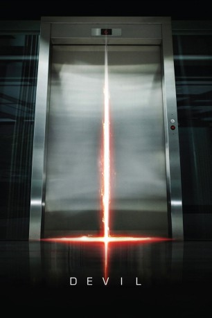

gesehen am 29.05.2016
gesehen am 29.05.2016Alternativ: Devil gesehen am 29.05.2016
 
 IMDB-Wertung: 6.3 / 10
IMDB-Wertung: 6.3 / 10  Metascore:
Metascore: 
Es ist eine vertraute Alltagsszene in einem Bürogebäude: Ein Fahrstuhl, gefüllt mit einer Gruppe von Menschen, bleibt stecken. Zunächst wundert man sich, denkt sich aber nichts Böses. Plötzlich spielen sich mysteriöse Dinge in dem beengten Raum ab, die die fremden Personen nach und nach das Fürchten lehren. Ganz offenbar hat sich der Teufel höchstpersönlich in die Kabine eingeschlichen, um einen nach dem anderen zu richten. Ein Entkommen scheint unmöglich.
Jahr: 2010
Dauer: 80 Minuten
FSK: 16
Land: USA Studio: Universal PicturesTonspuren: DTS-HD - ,
Untertitel: Deutsch, Englisch,
Auflösung: 1080p (1920x800) Größe: 4567 MB
Regisseur: John Erick Dowdle
Drehbuch: Florian Gallenberger
Soundtrack:
Darsteller:
 Chris Messina als Detective Bowden
Chris Messina als Detective Bowden Logan Marshall-Green als Mechanic
Logan Marshall-Green als Mechanic Jenny O'Hara als Old Woman
Jenny O'Hara als Old Woman Bojana Novakovic als Young Woman
Bojana Novakovic als Young Woman Bokeem Woodbine als Guard
Bokeem Woodbine als Guard Geoffrey Arend als Salesman
Geoffrey Arend als Salesman Jacob Vargas als Ramirez
Jacob Vargas als Ramirez Matt Craven als Lustig
Matt Craven als Lustig Joshua Peace als Detective Markowitz
Joshua Peace als Detective Markowitz Caroline Dhavernas als Elsa Nahai
Caroline Dhavernas als Elsa Nahai Joe Cobden als Dwight
Joe Cobden als Dwight Vincent Laresca als Henry
Vincent Laresca als Henry Joe Pingue als Business Bureau Clerk
Joe Pingue als Business Bureau Clerk Jonathan Potts als Wayne Kazan
Jonathan Potts als Wayne Kazan Gage Munroe als Jesse Bowden , uncredited
Gage Munroe als Jesse Bowden , uncreditedDatei: X:\2010(A-F)\Devil Fahrstuhl zur Hölle (2010, FSK16, 1920x800).mkv seit 20.05.2016
Festplatte: HD 2009(G-Z)-2010(A-F)
 Es gibt insgesamt 95 Filme in der Gruppe '2010(A-F)'
Es gibt insgesamt 95 Filme in der Gruppe '2010(A-F)'